JS in (near) Space
Today, we're going to talk about JavaScript in Near Space
Pawel Szymczykowski

@makenai
My name is Pawel Szymczykowski
I'm from Las Vegas, NV where I work at a company called Wedgies that does online polling.
You can find me on twitter as makenai, but I don't really tweet interesting things. If you're
not familiar with the pronunciation of Polish names, there is a handy emoji guide there in the
the middle. Just remember: paw bell shrimp chick coffee ski. Close enough.
SumoBot Jr.
If you've heard of me before, it's probably because of this guy. His
name is SumoBot Jr, and I designed him for NodeBots Day Las Vegas,
but he's popped up a lot of other events and was even used by Microsoft
to showcase Windows 10 on the Raspberry Pi 2 at their Build event
and the San Mateo Maker Faire.
I've also contributed a chapter to Make : JavaScript Robotics on Delta Robots
like the one on the cover of the book, along with a lot of people much cooler
than me.
Why Space?
Because Space is the final frontier. It is alien and strange. It goes
on forever and ever and I think that as a species we yearn to explore
the unknown. Perhaps it contains the very secrets to life itsself.
"Live Long & Prosper" by Adam Parry from the Noun Project
Plus, when I was a kid I think I watched too much Star Trek TNG and
it kind of got to me. I think that's fair, though. Previous generations
had the Apollo missions to get them excited.

?
From a JavaScript powered thingies perspective, there also seemed
to be a missing piece. We had nodeboats, boats, JavaScript controlled
submarines, quadcopters, and rockets. You might try to call me out on
rockets, but they are only powered by an air compressor and don't quite
make it far enough.
"I have no idea what I'm doing"
Finally it's interesting to me because it's difficult. There
is a reason it's the domain of governments and well funded companies
like Boeing, Soace-X, Blue Origin, Virgin Galactic and others. For a
side project, it has many facets disciplines that are required.
Electronics, programming, construction, careful planning, radio
operations and car chases.
Mission Possible
Yet it's attainable if you keep your goals realistic and are persistent.
Speaking of goals, it's good to define some right now. If you don't
specific select goals, how will you know if you've completed whatever
it is you've set out to do?
Goal #1 : Go Really High Up
Goal 1 : No brainer. Go up really really high. This is the goal where
we pretend to be an astronaut. There are lots of things that can go
high in the air. Drones are out. The fancy ones can go pretty high,
but not high enough. At least in the United States, they are restricted
to flying below 120 meters. Large hobbyist rockets can go really high,
but they very fast, don't stay in the sky for every long and can be
pretty explodey.
(mention cube satellites?)
High Altitude Balloons!
"Balloon" by Catherine Please from the Noun Project
What about balloons though? The United States Federal Code of
Regulations has a specific section for moored and unmoored baloons
for scientific experimentation, and the restrictions are pretty
reasonable. That's probably because they aren't a scary new technology
like drones and have been around since the 1700's. To summarize the rules:
you can't launch your balloon over a populated area like a city or near an airport. You
can't launch on a day with low visibility or a lot of clouds. (By the way,
clouds almost don't exist in Las Vegas), You can't trail anything longer than
50 feet from the balloon, and anything you trail has to have less than 50 lbs
or breaking force. You have to keep ATC in the loop. You need two ways to get
the balloon down. Allegedly, one of them can be 'it went too high and it
popped'. One of the problems with a HAB is you can't really control
where they go, but more on that later..
A high altitude or weather balloon is simply a very large latex balloon.
They are sold by weight and a 650g balloon can hold more gas than a 250g
one. They are very delicate and must be handled with gloves, as the oil
from your skin will damage the latex. You will usually fill them with
helium or hydrogen. Helium is pricier but less explodey. The rest is just
a rope holding the payload, often in a styrofoam box to insulate it from
the extreme cold at altitude.
..but does it go high enough that we can say we went to space?
"Near" Space
Yes. Yes we can. High Altitude Balloons can go up around 37km high.
Near space is a particularly interesting section of the Earth's
atmosphere that lies between 20 and 100km away. At this height
you can begin to see the curvature of the earth. Near space is also
the boundary of Armstrong's limit, an altitude at which the pressure
is so low that water will boil at human body temperature. It's not
a very friendly place if you don't have a pressure suit.
By the way, it's not named after the astronaut Neil Armstrong, but
a US Air Force doctor named Harry Armstrong.
Goal #2: Collect Interesting Data
"Graph" by Nicholas Menghini from the Noun Project
Here's where I get to pretend to be a scientist. The best possible
thing would be to go up there yourself, but that would take a lot
of balloons and I don't have a pressure suit. I don't even own
a pressed suit.
The next best thing would be to send a bunch of sensors up there
so you can see what it's like up there.
Why JavaScript?
npm install johnny-five

A big part of the reason is this guy: Johnny-Five, which is a
fantastic library for controlling hardware with JavaScript created
by Rick Waldron and contributed to by many. Johnny-Five and nodebots
are actually the reason I started seriously developing in JavaScript.
npm install raspi-io
For a long time, Johnny-Five only worked on Arduino and you'd need
to tether it to your laptop with a USB cable. That's less than ideal.
Then one day about two years ago, pluggable board support was added
and a guy named Bryan Hughes wrote a module to run on the Raspberry
Pi directly with no more tethering required. Nobody really knows
what happened to him, but to this day some people say that side track
room just over there giving a talk on getting involved in the JS
community.
Sensors
If you've only played with Arduino a little bit, you're probably
familiar with sensors and outputs requiring a shared ground pin and
one signal pin per sensor or output. The sensor shown in this slide
is an MPU-6050, a 6 axis accelerometer and gyroscope. If we were to
follow the pin per sensor model, we'd need seven pins. Luckily, this
and many of the fancier sensor modules uses i2c, a serial bus similar
to USB that only needs 4 pins.
i2c bus
 Every i2c device has an address, so you can chain a bunch of them
together easily and still need only 4 pins. Here we have added
and electric compass to get our heading, a barometer to measure
altitude and tempature. A GPS might also be useful here, but just wait.
Every i2c device has an address, so you can chain a bunch of them
together easily and still need only 4 pins. Here we have added
and electric compass to get our heading, a barometer to measure
altitude and tempature. A GPS might also be useful here, but just wait.
Reading sensor data
var barometer = new five.Barometer({ controller: "BMP180" });
var temperature = new five.Temperature({ controller: "BMP180" });
var imu = new five.IMU({ controller: "MPU6050" });
var compass = new five.Compass({ controller: "HMC5883L" });
var currentData = {};
barometer.on("change", function() {
currentData.pressure = this.pressure;
});
temperature.on("change", function(err,data) {
currentData.temperature = data.C;
});
imu.on("change", function() {
...
You don't need to know anything special about i2c devices to use
them on the pi with Johnny-Five. The sensors I chose are all supported
out of the box, and the code is virtually unchanged from what appears
in the docs. Define the sensor and listen for data changes. You don't
even have to specify the i2c address, as J5 will figure it out for you.
Recording data with winston
var Winston = require('winston');
var logger = new Winston.Logger({
transports: [
new winston.transports.File({
json: true,
filename: 'nyanpollo.log'
})
],
exitOnError: false
});
setInterval(function() {
logger.log('info', 'data', currentData);
}, 500);
We're going to want to store that data so we can use it later too.
I'm a web developer by trade, and I tend to use tools that are
familiar. Winston is a logging package for node apps that has an
option to log as JSON.
On the bottom, we just set a half second interval to log the whatever
the latest sensor values are along with a timestamp and logging level.
Sample Log Line
{
"accel": {
"x": -0.15, "y": 0.26, "z": 1, "pitch": -8.3, "roll": 14,
"acceleration": 1.0440785411069, "inclination": 119.98163936885,
"orientation": -1
},
"gyro": {
"x": 127, "y": 127, "z": 127,
"pitch": { "rate": 3.7, "angle": -12 }, "roll": { "rate": 14, "angle": 43 },
"yaw": { "rate": 4.8, "angle": 6.2 }, "rate": { "x": 14, "y": 3.7, "z": 4.8 },
"isCalibrated": true
},
"heading": 15, "bearing": "North by East",
"pressure": "87.3890",
"temperature": 78.08,
"timestamp": "2015-09-22T03:05:27.364Z"
}
This is a sample line from one of my log files. Boom, we have simple
and pretty scientific looking data logger.
npm install raspicam
The other kind of data we'd like are some visuals. Using a raspberry
pi camera is the obvious choice. It's very light and cheap and can take
still photos and video at up to 120fps. The raspicam library wraps the
built in Raspberry Pi command-line tools and you can start recording
video with two lines of code which I won't bore you with. A nice bonus
of using the pi camera is that the timestamps of the video and your sensor
data will be synchronized. Add a small USB drive and you can record
hours of video easily.
Goal #3 : Get everything back safe
 On this planet, we obey the laws of physics. What goes up must come down,
but it won't always come down where you expect or as softly as you'd like.
If we can't recover the balloon safely, then everything else is for naught
and you spent a lot of money and time on a 10 second show as everything
you've worked for floats away.
I've read stories of balloons being lost and given up on, then discovered
by a passer by and returned. I'd rather not count on that though, as I'm
pretty impatient.
On this planet, we obey the laws of physics. What goes up must come down,
but it won't always come down where you expect or as softly as you'd like.
If we can't recover the balloon safely, then everything else is for naught
and you spent a lot of money and time on a 10 second show as everything
you've worked for floats away.
I've read stories of balloons being lost and given up on, then discovered
by a passer by and returned. I'd rather not count on that though, as I'm
pretty impatient.
predict.habhub.org
Figuring out where your balloon is likely to land is really hard. It
involved a lot of calculator based on weight, lift and weather. Luckily
the wonderful folks at habhub.org have created a nice calculation to make
it easy. First you calculate when your balloon is likely to burst. You
enter the weight of your payload, how big your balloon is, and how high
you want to go. It will tell you how much helium to put in, when it will
burst and how fast it will go up. You put those into the map, and give
it a starting position, and it will show you where it is likely to burst,
and where it is likely to land.
If course it's not a guarantee. A lot of factors could mess it up, for
example a giant bird could abduct your balloon and you'd have no idea.
Venus GPS module
A GPS tracker would tell you exactly where the balloon is, but
you'd still need to get the data back to you! This is beyond the
range of WiFi or commodity RF modules like the xBee. Shortwave radio
can bridge the distance with no problem and there is in fact a
standard called APRS that is made for a job just like this!
trackuino.org
It should be possible to add support for the GPS and a radio transmitter
to Johnny-Five and then implement an APRS system there, and that's the
long term goal. However, there is an open source project made for
Arduino with schematics called Trackuino. Since it seems like there
is enough other details to worry about, let's just add an Ardunio
and use the serial connection to get location data.
The schematics you can find on the site use a custom PCB you can
order and uses surface mount components. The one I made is a bit
uglier and just uses a hand soldered ProtoShield.
Since the APRS frequency is restricted, you will need to be a licensed
HAM radio operator to broadcast on it. Three friends and I all crammed
for the technician class exam and passed. It wasn't hard as the questions
are available, but passing the test gave us almost zero usable knowledge.
That's my radio handle printed on the transmitter module.
aprs.fi

[3] KG7OXY-11>APRS,WIDE2-1:!3610.19N/11508.20W-/A=001972/Ti=75/Te=107/V=7415 ROFLDOGE���������������������������������������������������������������������������������������������������������������������������������������������������������������������������������������������������������������������������������������������������������������������������������������
The way the APRS system works is that it sends out a blip of information
at a specified interval of time. This contains the senders callsign,
the destination, the GPS position and altitude, followed by comment
fields.
This blip is picked up by special short wave radio stations all over
called digital repeaters and is routed to the internet, where it can
be used by sites like aprs.fi to track your location.
Once it stops moving, you grab your hiking boots, drive as close as
you can to where it landed, and try to recover it.
Goal #4 : JFDI
Assembled Payload
Drone Test Flights
Thank you!
Thanks to: Matt Runo, Thai Wood, Dan Harden, Deshawn B. Williams,
Emiliyan Yordanov and Julian Owyong.